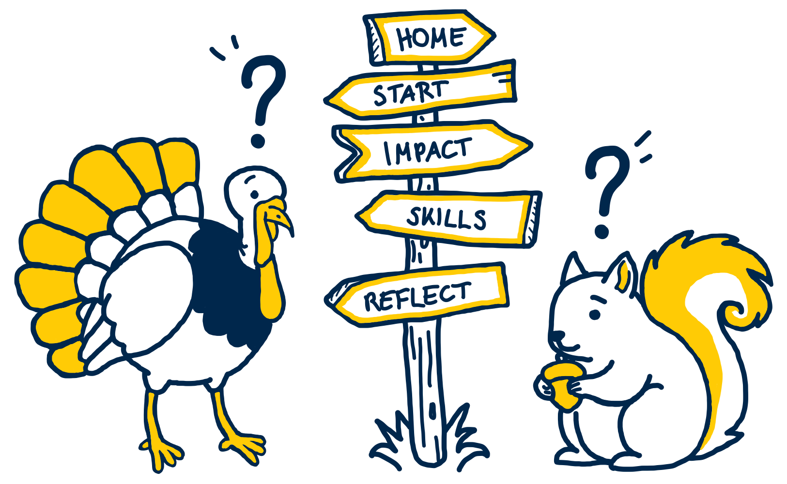

Let's get You back on Track!
The page you are looking for has been moved or never existed. But there is still plenty to discover:

Find the current Stage of Your Experience
Every engaged learning experience starts somewhere. Choose the stage that best matches where you are right now!
Preparing and Starting Your Experience
Set learning goals, understand the project context, examine your assumptions, define team roles, and establish a strong relationship with your partner.
Find out more about how to prepare and start your engaged learning experience!
During Your Experience
Manage projects and teams, conduct ethical research, communicate progress, respond to feedback, and work through unexpected challenges.
Review the active project resources for this third phase!
Ending Your Experience
Complete a responsible handoff, evaluate your impact, reflect on your growth, and translate your work into resume, portfolio, and interview content.
The final stages of your engaged learning experience are divided into phase four for ending your journey and phase five for the time after your experience. Look into the resources for both milestones!
Do You need further Assistance?
If you think this page should exist or if you have any further questions, email the ELO at umsi.engagement@umich.edu